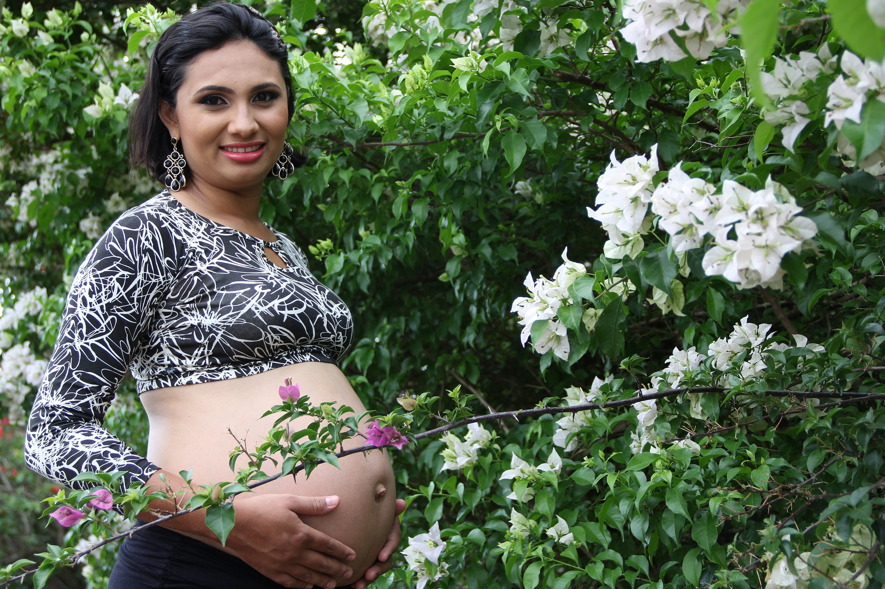

Hello
Welcome!

We're here!
The best!

Naše služby
.jpg)
Základem prevence je gynekologické vyšetření, kolposkopie a odběr cytologie. Cytologie je metoda, která dokáže odhalit patologické stavy na čípku děložním: zánětlivého, před nádorového nebo nádorového původu. Výsledky jsou k dispozici do 14 dnů. Odběr trvá několik sekund a je bezbolestný.
Náhle vzniklé gynekologické či porodnické obtíže jsou řešeny každý všední den jedním určeným lékařem ordinace, který má pro tyto účely vyhrazený čas po 18 hodině.
Naše gynekologická ordinace Vám může zprostředkovat vyšetření vrozených dispozicí k některým dědičně podmíněným onemocněním. Krevní test bude proveden v ordinaci a předán k vyšetření do akreditované genetické laboratoře.
Každý čtvrtek dopoledne v naší ordinaci provádí sonografie štítné žlázy interní předoperační vyšetření a interní kontroly včetně EKG u těhotných.
Ženám u kterých je zvýšené riziko těchto dědičných onemocnění je pak toto vyšetření hrazeno ZP – ostatní mají možnost provedení testu za úhradu.
Trombofilní stavy ( dědičně podmíněná zvýšená srážlivost krve ).U osob s tímto dědičným onemocnění dochází častěji k tzv. TEN = tromboembolické nemoci - vzniku žilní trombózy s následnou embolií. V důsledku těchto procesů vzniká infarkt myokardu nebo cévní mozková příhoda.
1991 - absolvent lékařské fakulty v Hradci Králové
1995 - atestace I. st. V oboru gynekologie a porodnictví
1991 – 2003 zaměstnán jako sekundární lékař NsP Roudnice n. Labem
2011 - Praktický a teoretický kurz ultrazvukového vyšetření ve 20 - 22. týdnu těhotenství ( Praha, VFN )
2011 - Praktický kurz ultrazvukového vyšetření v I. trimestru těhotenství ( Praha, VFN )
Členství:
Česká lékařská komora
Naš tim
Základem prevence je gynekologické vyšetření, kolposkopie a odběr cytologie. Cytologie je metoda, která dokáže odhalit patologické stavy na čípku děložním: zánětlivého, před nádorového nebo nádorového původu. Výsledky jsou k dispozici do 14 dnů. Odběr trvá několik sekund a je bezbolestný.
Náhle vzniklé gynekologické či porodnické obtíže jsou řešeny každý všední den jedním určeným lékařem ordinace, který má pro tyto účely vyhrazený čas po 18 hodině.
Naše gynekologická ordinace Vám může zprostředkovat vyšetření vrozených dispozicí k některým dědičně podmíněným onemocněním. Krevní test bude proveden v ordinaci a předán k vyšetření do akreditované genetické laboratoře.
Každý čtvrtek dopoledne v naší ordinaci provádí sonografie štítné žlázy interní předoperační vyšetření a interní kontroly včetně EKG u těhotných.
Ženám u kterých je zvýšené riziko těchto dědičných onemocnění je pak toto vyšetření hrazeno ZP – ostatní mají možnost provedení testu za úhradu.
Trombofilní stavy ( dědičně podmíněná zvýšená srážlivost krve ).U osob s tímto dědičným onemocnění dochází častěji k tzv. TEN = tromboembolické nemoci - vzniku žilní trombózy s následnou embolií. V důsledku těchto procesů vzniká infarkt myokardu nebo cévní mozková příhoda.